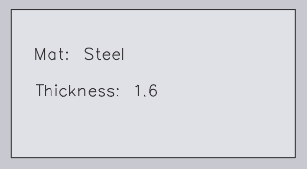
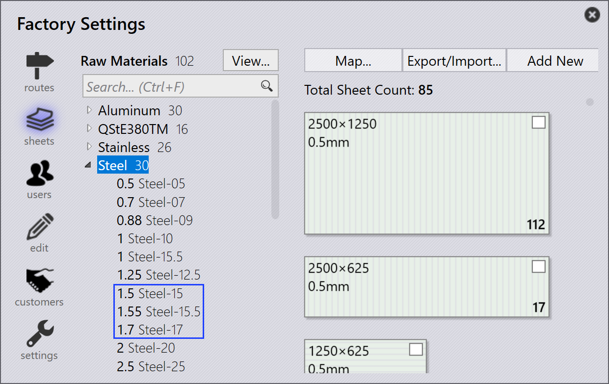

Tuonti

Output settings
Save flat pattern - Ota tämä vaihtoehto käyttöön, jotta tuodun osan levityskuva tallennetaan.
Format for flat pattern - Tätä vaihtoehtoa käytetään valitsemaan joko DXF- tai GEO-tiedostomuoto.
Flat pattern destination - Tämä on sijainti, johon levityskuva tallennetaan.
Import settings
Units for DXF files - Tämä on mittayksikkö, jolla DXF-tiedosto tuodaan; käyttäjä voi valita mm:n tai tuuman väliltä.
Material lookup keys - Useita hakumerkintöjä voidaan määrittää erottamalla ne pilkulla. Kun osa tuodaan, JFY Plus käyttää näitä avaimia materiaaliarvojen etsimiseen. Etsittyjä arvoja käytetään sitten raakamateriaalin selvittämiseen. Alkuperäiset arvot tallennetaan osan Misc Properties -kohtaan.
Revision lookup keys - Kun osa tuodaan, raakaosatiedoston (tuotavan osatiedoston) revisioarvoa verrataan tietovarastossa olevaan nykyiseen revisioarvoon. Tuonti keskeytetään, jos revisio on sama. Mukautettujen kenttien määritys on nyt myös tuettu DXF-tiedostoille. DXF-tiedostoissa mukautettujen kenttien tiedot poimitaan piirustuksen tekstitasosta tai PPI-liitteestä.
Use geometry comparison on same CAD revision - Vertaa geometriaa tuotaessa osaa samalla CAD-revisiolla ja kehottaa käyttäjää korvaamaan tai ohittamaan tuonnin, jos eroja havaitaan. Katso Tuontimääritys saadaksesi lisätietoja.
Part name keys - Tämä vaihtoehto toimii samalla tavalla kuin Revision lookup keys ja materiaali. Aseta yksi tai useampi Part name keys käyttääksesi PPI:n Part name -nimeä osan nimenä tiedostonimen sijaan.
Thickness lookup keys - Useita hakumerkintöjä voidaan määrittää erottamalla ne pilkulla. Kun osa tuodaan, JFY Plus käyttää näitä avaimia paksuusarvojen etsimiseen. Etsittyjä arvoja käytetään sitten paksuuden selvittämiseen. Alkuperäiset arvot tallennetaan osan Misc Properties -kohtaan.
Thickness comparison fudge - Tätä käytetään raakamateriaalin etsimiseen, kun osa tuodaan. JFY Plus yrittää selvittää raaka- materiaalin materiaalin nimen ja paksuuden jäsennyksen jälkeen. Lisä- tietoja on jäljempänä Paksuuden toleranssi -aiheessa.
Identify shapes after a flat is imported - Kun osa tuodaan, sen sisäiset muodot voidaan tunnistaa ja yksilöidä automaattisesti.
Shape identification fudge - Muodon tunnistuksen fudge-arvo voidaan asettaa:
-
Global level - Tätä arvoa käytetään oletuksena kaikille muodoille.
-
Individual Shape Level - Oletusarvo voidaan ohittaa asettamalla fudge-arvo yksittäisen muodon tasolla. Muodon valitseminen Shape Library -valintaikkunassa näyttää fudge-arvon. Oletuksena tämä on asetettu arvoon 0, ja näille muodoille käytetään oletusarvoista globaalia arvoa.
Rotate flat horizontally - Yleensä leikkauskoneiden pöydät ovat suorakulmaisia ja leveitä. Työstöjen toteutettavuuden parantamiseksi käännä osaa osan leveyden suuntaisesti sen jälkeen, kun osa on tuotu.
Part rotation threshold - Aseta tämä käännön sallivaksi vähimmäisluvuksi. Mitään asetettua arvoa pienempää osaa ei käännetä.
Misc settings
Enable pre-import external tools - Ota esituonnin ulkoiset työkalut -tuontivaihtoehto käyttöön ottaaksesi Creo Reader -toiminnon käyttöön. JFY Plus lataa pudotetun osan esipoimitut perheinstanssit. Huomaa, että instanssin poiminta suoritetaan osan latauksen aikana (esituontitoimintona), joten Creo-ohjelmiston on oltava asennettuna tietokoneeseen, josta osaa ollaan lataamassa.
Ignore drawing colors in Flat thumbnails for clarity - Ota tämä vaihtoehto käyttöön luodaksesi harmaasävyisiä, terävämpiä pikkukuvia. Tasojen värit ja tekstientiteetit jätetään huomiotta kuvan selkeyden vuoksi.
Use only one Engine for all import tasks - Kun tämä on käytössä, kaikkiin tuontitehtäviin käytetään vain yhtä moottoriydintä.
Paksuuden toleranssi
Thickness comparison fudge valitsee lähimmän levynpaksuusarvon, kun haluttua levynpaksuutta ei ole saatavilla varastossa, vertaamalla varastossa olevien levyjen paksuusarvoja.
Oletetaan esimerkiksi seuraavaa:
-
Meillä on osa, jonka levynpaksuus on 1,6 mm ja materiaali teräs.

-
Thickness comparison fudge -arvo on 0,1 mm.

-
Varastossa on teräslevyjä, joiden paksuus on 1,5 mm, 1,55 mm ja 1,7 mm.

JFY Plus valitsee levyn, jonka paksuusarvo on lähin, verrattuaan Thickness comparison fudge -arvoa (0,1 mm) tuotuun kappaleeseen (mitta 1,6 mm). Tässä tapauksessa valinta on 1,55 mm.